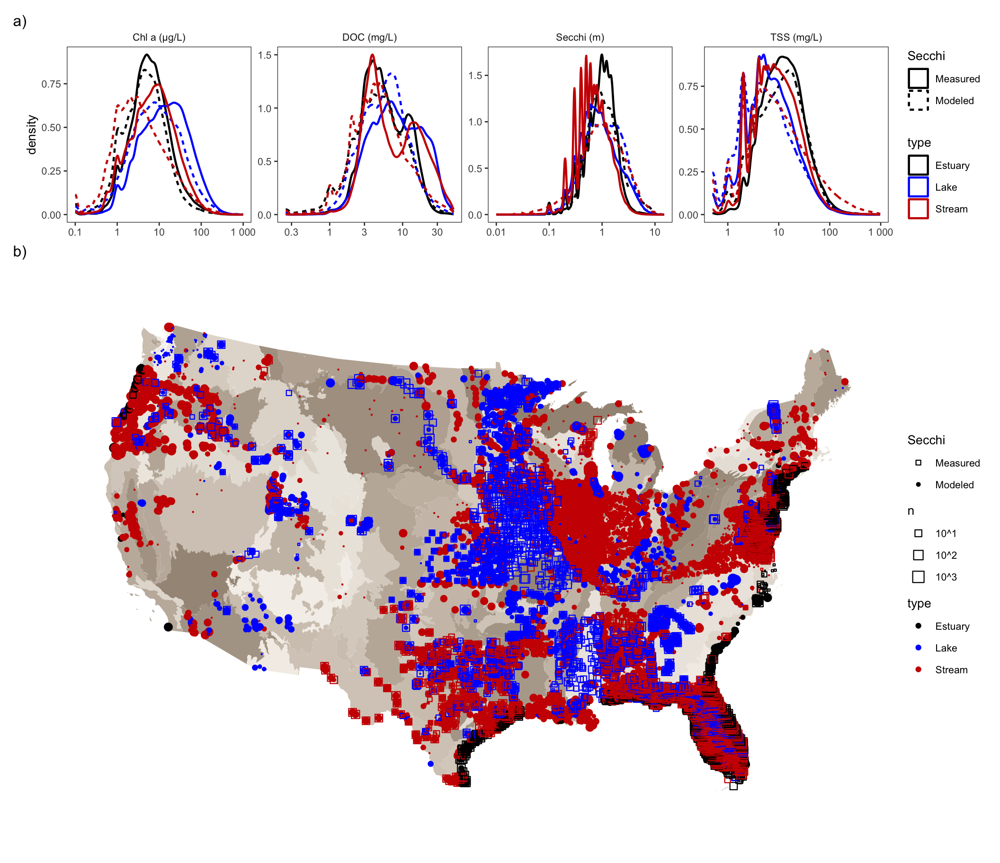
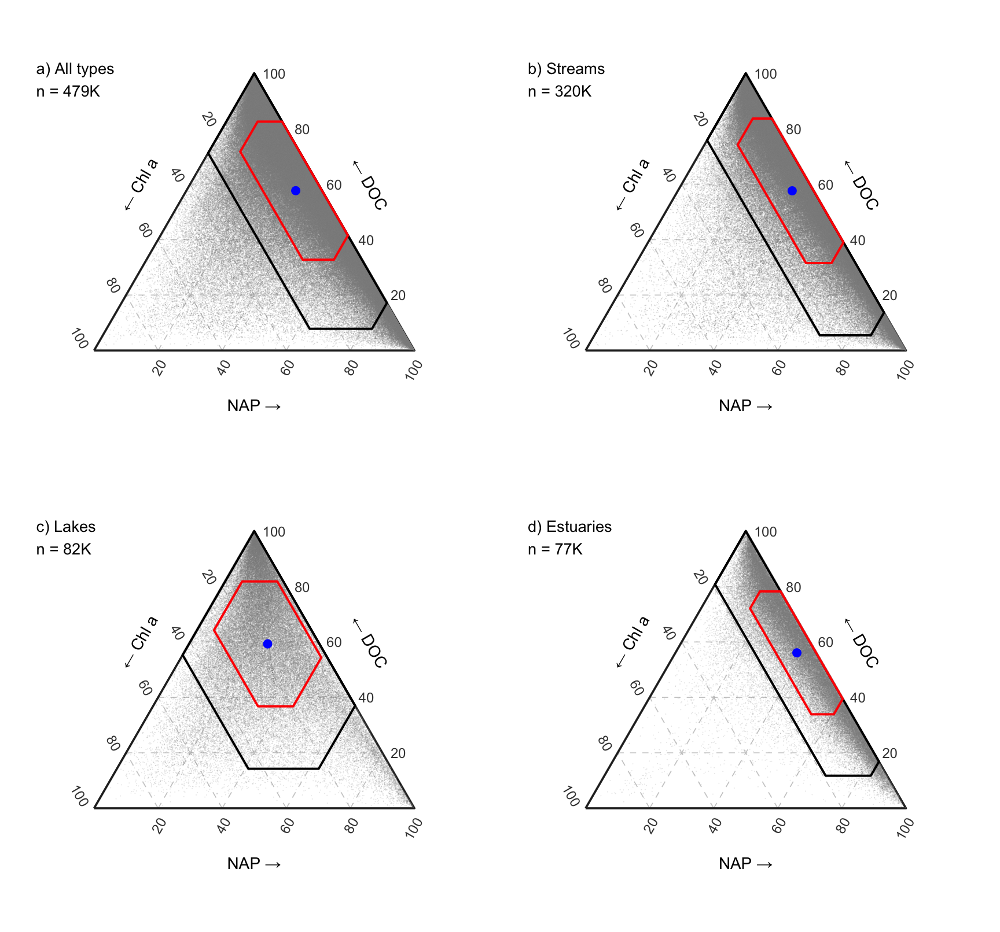
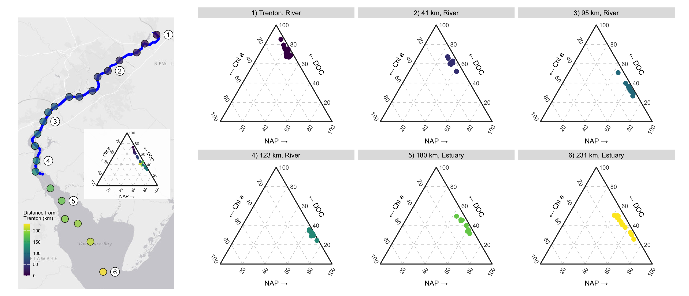
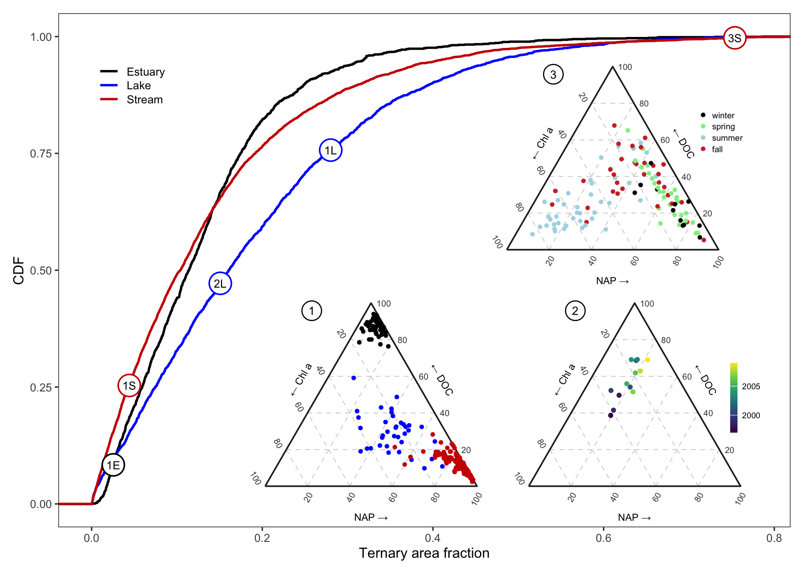

Section 9 Manuscript Figures Gallery (Figs. 1–4)
Every manuscript figure is assembled programmatically in R (patchwork + R/ternary.R + R/figures.R) and written to figs/ as 300 dpi PNG and vector PDF files.
9.1 Figure 1: Continental Data Distributions and Ecoregion Coverage

- (a) Kernel density distributions of
Chl a(\(\mu\text{g L}^{-1}\)),DOC(\(\text{mg L}^{-1}\)),Secchi(\(\text{m}\)), andTSS(\(\text{mg L}^{-1}\)) by water-body type (Estuary,Lake,Stream) across all 478,929 application observations, contrasting samples with measured Secchi depth (Measured, solid lines; \(n = 275,287\)) against samples where Secchi depth is modeled by Model 7 (Modeled, dashed lines; \(n = 203,642\)) using the consistent pure-water offset \(k_w = 0.04776\text{ m}^{-1}\). - (b) Spatial density of simultaneous observations aggregated to \(0.1^\circ \times 0.1^\circ\) grid cells over U.S. EPA Level III ecoregions.
9.2 Figure 2: Continental Ternary Partitioning by Water-Body Type

Individual points represent per-sample non-water light-attenuation fractions \((f_{\text{Chl }a}, f_{\text{DOC}}, f_{\text{NAP}})\) predicted by Model 7 across (a) all water types (\(n = 478,929\)), (b) streams (\(n = 318,091\)), (c) lakes (\(n = 82,517\)), and (d) estuaries (\(n = 78,321\)). Blue circles mark arithmetic mean compositions; red and black polygons enclose the exact simplex regions within \(\pm 1\text{ SD}\) and \(\pm 2\text{ SD}\) of each group mean (tern_sd_region()).
9.3 Figure 3: Longitudinal River–Estuary Continuum Along the Delaware River and Bay

Longitudinal shift in light-attenuation partitioning along 231 km of the Delaware River and Delaware Bay across 22 Delaware River Basin Commission (31DELRBC_WQX) long-term monitoring stations with \(\ge 8\) distinct years of data (2005–2017). Because Model 7 assigns attenuation coefficients by Level III ecoregion (8.5.1 Middle Atlantic Coastal Plain for Sites 1–5; 8.5.4 Atlantic Coastal Pine Barrens at the bay mouth for Site 6) without imposing an artificial categorical break between Stream and Estuary, it seamlessly resolves the continuum from DOC dominance in the tidal freshwater river at Trenton (Site 1, 0 km) through increasing NAP dominance along the upper and lower tidal river (Sites 2–4, 41–123 km, classified as Stream in WQP) to DOC–NAP co-dominance and interannual switching driven by tidal and wind resuspension in Delaware Bay (Sites 5–6, 180–231 km, classified as Estuary in WQP).
f3$sites %>% st_drop_geometry() %>% inner_join(DELAWARE_EXEMPLARS, by = 'SiteID') %>%
left_join(f3$year_avg %>% group_by(SiteID) %>%
summarize(years = paste(min(year), max(year), sep = '–'),
n_years = n(),
mean_DOC = percent(mean(doc_kd), 0.1),
mean_NAP = percent(mean(tss_kd), 0.1),
mean_Chl = percent(mean(chl_kd), 0.1)),
by = 'SiteID') %>%
select(num, SiteID, label, type, dist_trenton, years, n_years, mean_DOC, mean_NAP, mean_Chl) %>%
kable(digits = 0, col.names = c('Panel #', 'WQP SiteID', 'Panel Title', 'WQP Type', 'Distance from Trenton (km)', 'Years Sampled', 'Distinct Years', 'Mean DOC %', 'Mean NAP %', 'Mean Chl a %'),
caption = 'Long-term Delaware River and Bay monitoring stations highlighted in Panels 1–6 of Figure 3.') %>%
kable_styling(bootstrap_options = c('condensed', 'striped'), full_width = TRUE)| Panel # | WQP SiteID | Panel Title | WQP Type | Distance from Trenton (km) | Years Sampled | Distinct Years | Mean DOC % | Mean NAP % | Mean Chl a % |
|---|---|---|---|---|---|---|---|---|---|
| 1 | 31DELRBC_WQX-332068 |
|
Stream | 0 | 2005–2017 | 13 | 74.6% | 21.8% | 3.7% |
| 2 | 31DELRBC_WQX-892070 |
|
Stream | 42 | 2010–2017 | 8 | 62.6% | 31.8% | 5.6% |
| 3 | 31DELRBC_WQX-091011 |
|
Stream | 95 | 2005–2017 | 13 | 35.5% | 61.5% | 3.1% |
| 4 | 31DELRBC_WQX-091002 |
|
Stream | 123 | 2010–2017 | 8 | 32.2% | 65.5% | 2.3% |
| 5 | 31DELRBC_WQX-091020 |
|
Estuary | 180 | 2010–2017 | 8 | 42.2% | 53.4% | 4.4% |
| 6 | 31DELRBC_WQX-091030 |
|
Estuary | 231 | 2005–2017 | 13 | 41.1% | 52.8% | 6.1% |
9.4 Figure 4: Site-Level Temporal Stability — Lucistatic vs. Lucidynamic Regimes

For each monitoring station with \(> 7\) simultaneous observations (9,128 sites across the conterminous U.S.), the ternary area fraction (tern_area_fraction()) is the exact area of its \(\pm 2\text{ SD}\) simplex polygon (clipped to \([0, 1]^3\) via Sutherland–Hodgman half-plane clipping) divided by the total area of the equilateral unit-side triangle (\(\sqrt{3}/4 \approx 0.4330\)). Empirical cumulative distribution functions (CDFs) by water-body type demonstrate that streams (median 10.2%) and estuaries (median 10.9%) are more temporally concentrated in ternary space (lucistatic) than lakes (median 15.7%, lucidynamic). Fewer than 5% of lakes (4.5%) and fewer than 2% of streams (1.6%) and estuaries (0.4%) occupy \(\ge 50\%\) of ternary space.
9.4.1 Summary of Figure 4 CDFs and Exemplar Stations
areas %>%
group_by(`Water-Body Type` = type) %>%
summarize(
`Sites (> 7 obs)` = fmt_n(n()),
`25th Percentile` = percent(quantile(area, 0.25), 0.1),
`Median Area Fraction` = percent(median(area), 0.1),
`Mean Area Fraction` = percent(mean(area), 0.1),
`75th Percentile` = percent(quantile(area, 0.75), 0.1),
`% Sites >= 50% Area` = percent(mean(area >= 0.50), 0.1)
) %>%
kable(caption = 'Distribution of site-level ternary area fractions across water-body types (Figure 4 CDFs).') %>%
kable_styling(full_width = FALSE, bootstrap_options = c('condensed', 'striped'))| Water-Body Type | Sites (> 7 obs) | 25th Percentile | Median Area Fraction | Mean Area Fraction | 75th Percentile | % Sites >= 50% Area |
|---|---|---|---|---|---|---|
| Estuary | 1,463 | 5.1% | 10.9% | 12.4% | 16.8% | 0.8% |
| Lake | 2,362 | 7.3% | 15.7% | 19.0% | 27.0% | 4.2% |
| Stream | 5,303 | 4.1% | 10.2% | 13.9% | 18.9% | 2.4% |
FIG4_SITES %>%
left_join(areas, by = 'SiteID') %>%
transmute(
Inset = inset,
`CDF Label` = label,
`WQP SiteID` = SiteID,
`Station Name` = site_name,
`Water Type` = type,
`Observations (n)` = n,
`Ternary Area Fraction` = percent(area, 0.1),
`CDF Percentile` = percent(map2_dbl(type, area, ~ ecdf(areas$area[areas$type == .x])(.y)), 0.1),
`Optical Regime` = role
) %>%
kable(caption = 'The five exemplar monitoring stations highlighted on the CDF curves and Insets 1–3 of Figure 4.') %>%
kable_styling(bootstrap_options = c('condensed', 'striped'), font_size = 12, full_width = TRUE)| Inset | CDF Label | WQP SiteID | Station Name | Water Type | Observations (n) | Ternary Area Fraction | CDF Percentile | Optical Regime |
|---|---|---|---|---|---|---|---|---|
| 1 | 1S | USGS-07373420 | Mississippi R. near St. Francisville, LA | Stream | 155 | 4.5% | 26.8% | lucistatic NAP |
| 1 | 1E | 21FLFTM_WQX-CALUSA0023FTM | Caloosahatchee Estuary (Orange R.), FL | Estuary | 61 | 2.3% | 12.4% | lucistatic DOC |
| 1 | 1L | MNPCA-29-0250-00-201 | Portage Lake, MN | Lake | 37 | 24.8% | 71.0% | lucistatic Chl a |
| 2 | 2L | 21FLSJWM-LGNA | Lake Griffin (north station), FL | Lake | 251 | 14.4% | 46.6% | multi-annual trajectory |
| 3 | 3S | CEDEN-KR25444_KHSA | Klamath R. below Iron Gate Dam, CA | Stream | 115 | 75.3% | 99.7% | seasonal cycle |